Twonight
Twonight is a movie app for couples with a shared watchlist, a question for each partner after every film, and a history of what you've watched together.
- Role
- Solo founder. I designed, built and shipped it.
- Status
- Live on the App Store and Google Play
- Result
- 26% day-7 retention across 100+ organic users, as of Sep 2026
- Scale
- 262 monthly users, $0 spent on marketing
Problem
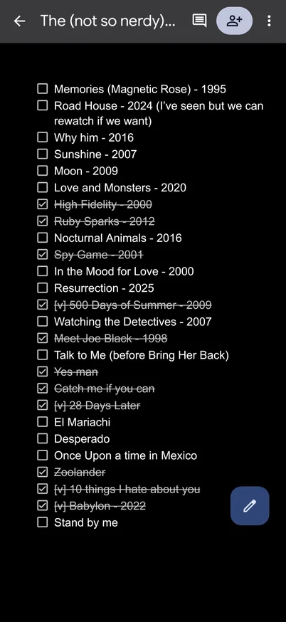
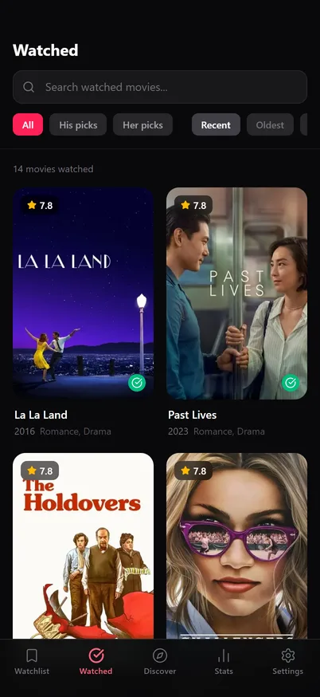
My girlfriend and I were long distance, and watching movies was how we spent time together. We tracked every film in a Google Doc. Keeping it current took real effort, and the doc couldn't help us choose what to watch next.
I built a private app for the two of us and called it OurFilms. When I interviewed friends to improve the UI, several asked to use it with their own partners. That was my first evidence that other couples had the same problem, and it's why Twonight is public.
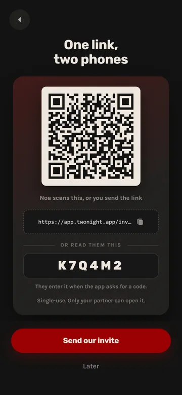
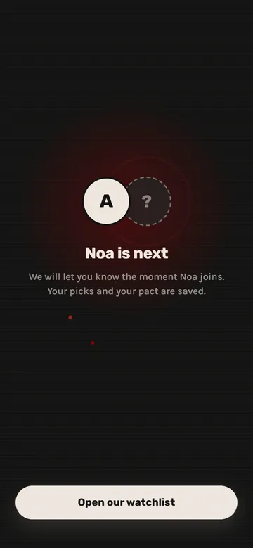
I interviewed 15 users before settling the scope. Long-distance couples were the core segment, so I repositioned the app around them. My success metric was the share of couples who log a movie every week.
The app also had to meet these constraints:
- Exactly two people share a space.
- One partner can start alone and invite the other later with a link or a QR code.
- Answers stay hidden until both partners reply.
- One subscription covers both partners.
- No passwords. Sign-in is Google, Apple or an email link.
- The free tier works on its own, with 5 debriefs a month and a capped watchlist.
Key decisions
Built the debrief on a Rochester study
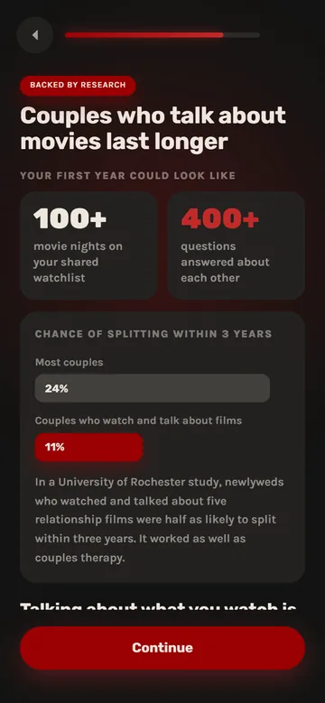
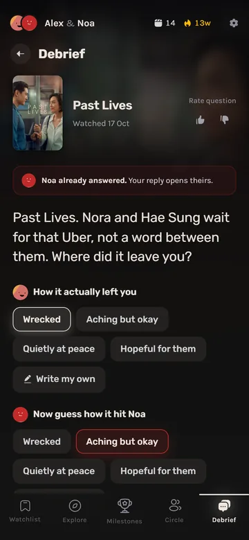
A University of Rochester study followed 174 newlywed couples for 3 years. Couples who watched about 5 relationship films in a month and talked about each one afterward divorced or separated at 11%, against 24% for couples who got no program. Two therapist-led programs of about 20 hours each got the same 11%.
I built the first question feature on that study. In April, OurFilms showed a discussion prompt after you rated a film, and in June the debrief replaced those prompts. Since July, onboarding has a screen with the study's numbers.
One question set per film
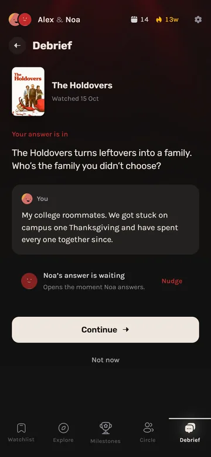
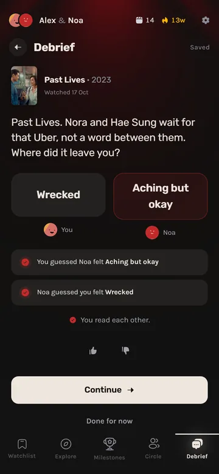
I generate debrief questions once per film, fitted to 5 relationship phases, and every couple who watches that film gets the same set. Generating them per couple would have made the cost grow with every new couple, while per-film generation keeps it flat.
On July 27 I noticed that relationship-heavy questions were wearing couples out, so the deck now opens with lighter, playful ones.
Swapped the AI recommender for collaborative filtering
My first recommender used LLM embeddings. It covered only 154 of 1,998 films and suggested Robot Dreams to a couple who never watch animation.
I replaced it with collaborative filtering over TMDb's related-films data, plus a filter for weak films and a rule that keeps the picks varied. A trained model comes later, once about 50 couples have rated films.
Replaced the Collection tab with Milestones
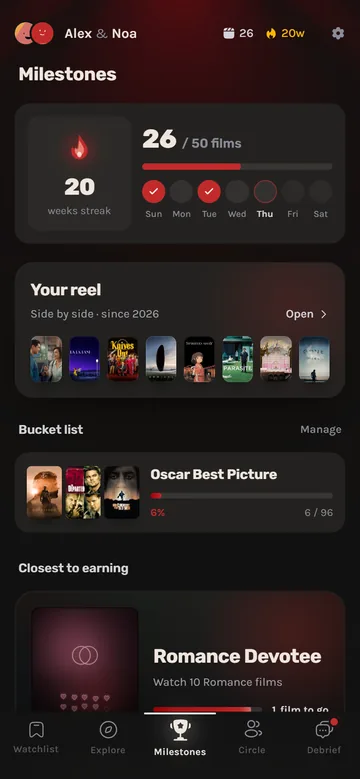
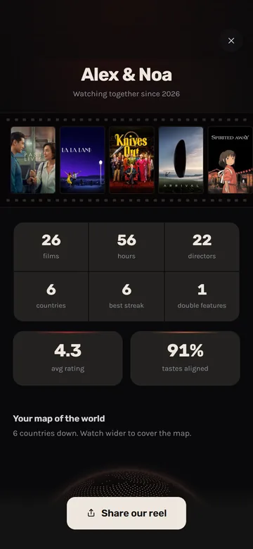
In June, Milestones replaced the Collection tab. Each card's art shows its goal and fills in with progress. The streak card lights a flame for each movie night, and the horror card opens a pair of eyes for each scary film you finish.
Couples can also track bucket lists, such as the IMDb Top 250 or every Oscar Best Picture winner, and a page called Your Reel totals their films, hours and directors. In July I added 30 more milestones, including seasonal ones like Spooky Season and a One Year of Us anniversary.
Moved signup after the first watchlist
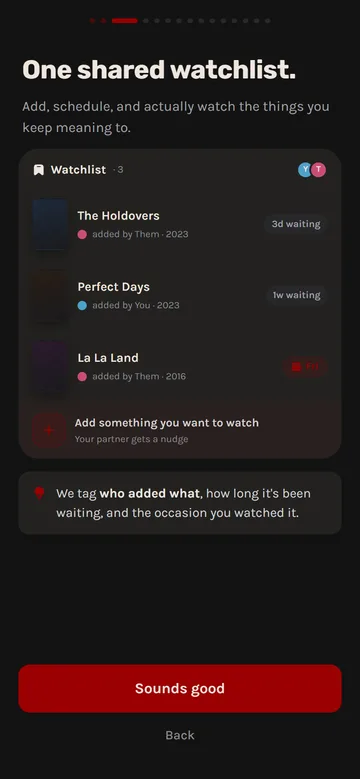
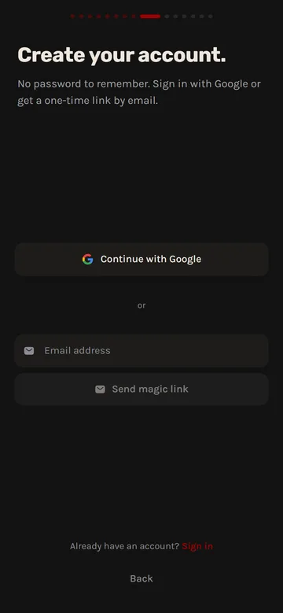
The first onboarding was 15 linear steps, and 7 of them were marketing screens shown before signup. People read about the app instead of using it.
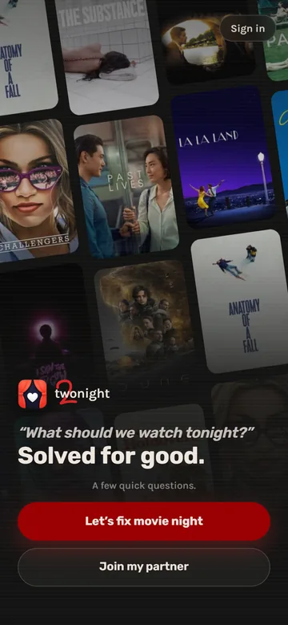
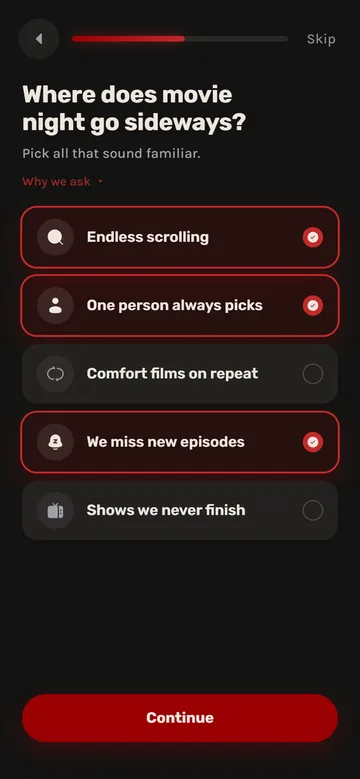
In June I rebuilt it so people try the app first, with a target of a solo "aha" in under 3 minutes. A month later it grew into a quiz of up to 27 screens about how the two of you watch.
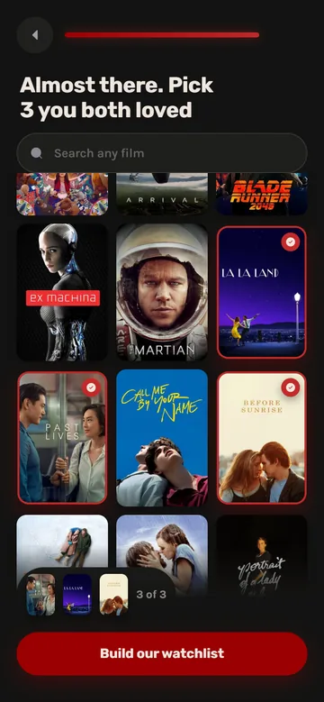
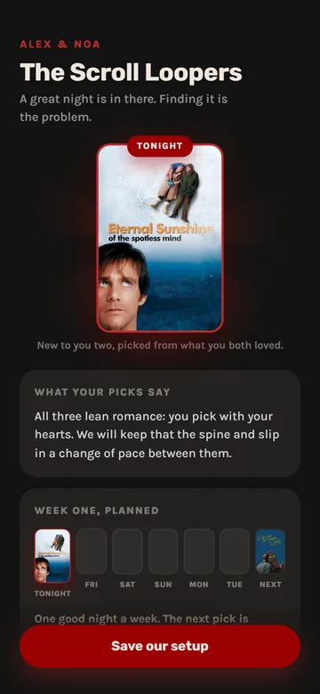
Near the end you pick 3 films you both loved. The reveal then names your couple type and lines up tonight's film and the next one, all before you make an account.
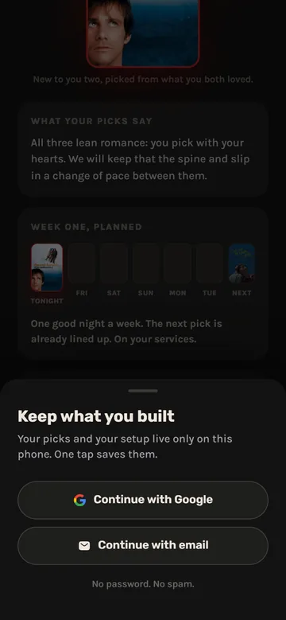
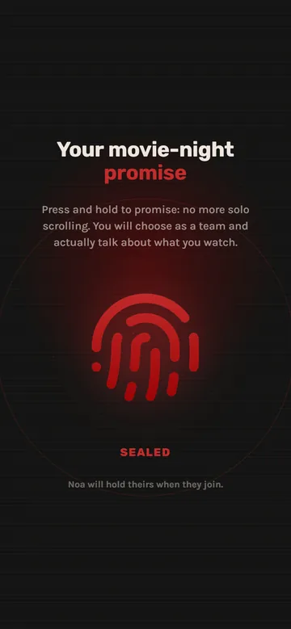
Signup comes after that, once you have something you'd lose by leaving. Then you send your partner the invite and hold a fingerprint to make the pact.
Only 32% of the people who start onboarding reach the reveal (22 of 68).
On August 4 I started an A/B test of a shorter variant without the 8 screens that collect no answers. At about 5 onboarding starts a day, the test fills slowly and has no result yet.
In the next version, still only a design, nothing the user makes disappears. Right now the pact is saved and then never shown again.
Raised the price and cut the paywall step
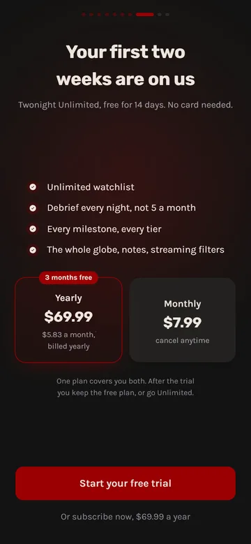
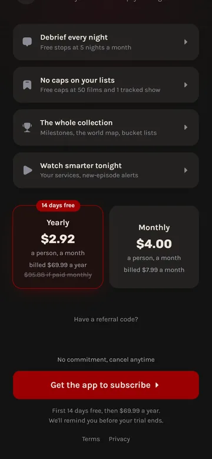
My first plan was $49.99 a year with a 7-day trial at pairing. I launched at $69.99 a year or $7.99 a month, with a 14-day store trial on the yearly plan only, and cut the paywall step from onboarding. If a couple splits, the subscription stays with whoever paid.
Resubmitted after an App Store rejection
Apple rejected the first submission. I hadn't known that a version and its in-app purchases must go to review together. After a resubmission it went live on July 24.
I chose App Store keywords by autocomplete demand and by how many ratings the top apps for each phrase had, looking for phrases a new app could rank for.
Results
As of September 2026, day-7 retention is 26% across 100+ organic users, with $0 spent on marketing. For comparison, OneSignal's 2024 benchmarks, as summarized by GetStream, put entertainment apps at about 18% on day 7. 262 people used the app in the month to September 10.
The App Store funnel for the first 11 days, with Apple Search Ads running on free credits:
- 4,730 impressions
- 147 product page views (3.1%)
- 35 installs (24%)
- 14 accounts (40%)
Two numbers are still weak. Only 8 of 19 couples had ever paired (42%), and just 32% of people who start onboarding reach the reveal.
Timeline
- Apr 2026: first commit, still called OurFilms.
- May 2026: closed beta.
- Jun 4, 2026: open signup.
- Jul 24, 2026: live on the App Store.
- Aug 4, 2026: onboarding A/B test starts.
- Sep 11, 2026: live on Google Play.
What I'd do differently
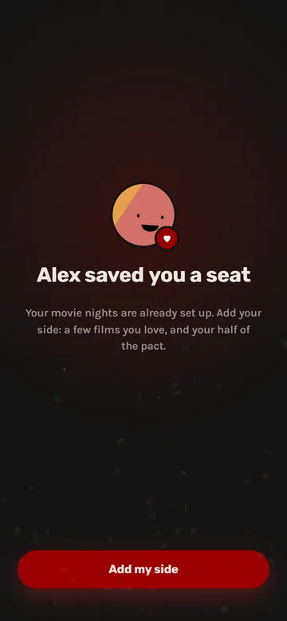
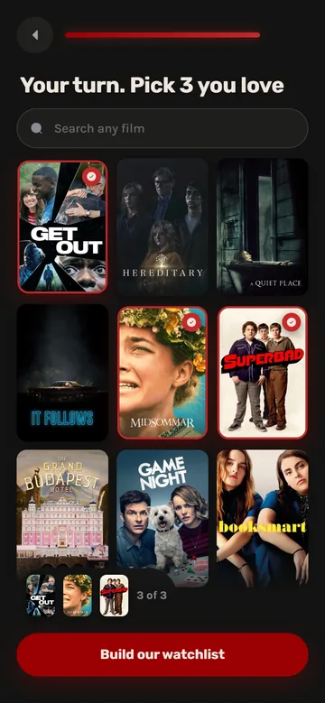
Fewer than half of couples ever get both partners into the app, so I'd treat pairing as the activation metric from day one.
For 14 days PostHog recorded 2 signups while about 15 real accounts were created. Next time I'd check analytics against the database before trusting a chart.
A SQL bug broke debriefs for months. Email sign-in also never worked inside the native app, and nobody noticed because Google sign-in still worked. I'd set up alerts at launch instead of waiting for someone to spot a broken feature.